Last of the Big Tuskers is showing in festivals and is available on demand.
On Demand
LAST OF THE BIG TUSKERS — Vimeo (Documentary, 2018)
Festivals
Wildlife Conservation Film Festival
Cinema Village Theater, New York — October 19 to 25, 2018.
Pass/tickets are available on the WCFF website (wcff.org).

Documentaries Without Borders Film Festival
October 21, 2018.
Newburyport Documentary Film Festival
Firehouse Center for the Arts, Newburyport, MA — September 15, 2018.
Pass/tickets are available on the NDF website (nbptdocufest.org).

Nature & Tourism Film Festival
Murnau Filmtheater, Wiesbaden — November 30 to December 2, 2018.

Nature Track Film Festival
Gates Foss Community Center, Los Olivos — March 22 to 24, 2019.
Pass/tickets are available on the Nature Track Film Festival website (naturetrackfilmfestival.org).

Hollywood International Independent Documentary Awards Film Festival
Historic: Raleigh Studios, Hollywood, Los Angeles — March 23, 2019.
Elements International Environmental Film Festival
OMNIMAX/Science Theater, Vancouver — April 8 to 14, 2019.
Pass/tickets are available on the Elements Film Festival website (elementsfilmfest.org).
Northeast Mountain Film Festival
Dillard House, Georgia — June 14 to 16, 2019.
Pass/tickets are available on the NMFF website (northeastmountainfilmfestival.com).
